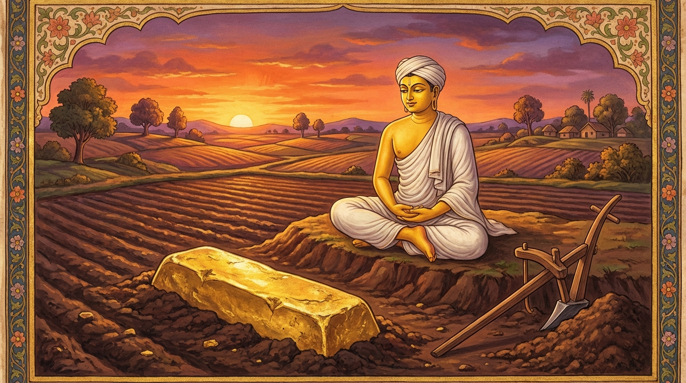

6. කාඤ්චනක්ඛන්ධ ජාතකය (56)
“යො පහට්ඨෙන චිත්තෙන” යනාදී මෙම ජාතක දේශනාව බුදුරජාණන් වහන්සේ ජේතවනාරාමයෙහි වැඩ වසන සමයෙහි එක්තරා භික්ෂුවක් අරබයා දේශනා කරන ලදී. සැවැත් නුවර වැසි එක් කුල පුත්රයෙක් ශාස්තෘන් වහන්සේගේ ධර්ම දේශනාව අසා, රත්නත්රය පිළිබඳව පැහැදී සසුනෙහි පැවිදි විය. ඉක්බිති ඔහුගේ ආචාර්ය උපාධ්යායවරු ඔහුට ශීලය හඳුන්වා දෙන්නාහු මෙසේ කීහ:
- ඇවැත්නි, ඒකවිධ (එක් ආකාර) ශීලයක් ඇත.
- ද්විවිධ, ත්රිවිධ, චතුර්විධ, පඤ්චවිධ, ෂඩ්විධ, සප්තවිධ, අෂ්ටවිධ, නවවිධ, දසවිධ හා බහුවිධ වශයෙන් ශීලය බොහෝ ප්රභේද ඇත්තේය.
- මෙය චූළ ශීලය නම් වේ.
- මෙය මජ්ඣිම ශීලය නම් වේ.
- මෙය මහා ශීලය නම් වේ.
- මෙය ප්රාතිමෝක්ෂ සංවර ශීලය නම් වේ.
- මෙය ඉන්ද්රිය සංවර ශීලය නම් වේ.
- මෙය ආජීව පාරිශුද්ධි ශීලය නම් වේ.
- මෙය ප්රත්යය ප්රතිසේවන ශීලය නම් වේ.
මෙසේ ශීලය කියා දුන් කල්හි ඒ භික්ෂුව මෙසේ සිතුවේය: “මේ ශීලය නම් ඉතා බොහෝය. මම මෙපමණක් සමාදන් වී රැකීමට සමත් නොවන්නෙමි. ශීලය පුරණය කිරීමට නොහැකි වූ කල පැවිද්දෙන් ඇති ඵලය කුමක්ද? මම ගිහි වී දානාදී පින්කම් ද කරන්නෙමි; අඹුදරුවන් ද පෝෂණය කරන්නෙමි.” මෙසේ සිතා ඔහු, “ස්වාමීනි, මම ශීලය රැකීමට සමත් නොවෙමි. අසමත් කෙනෙකුට පැවිද්දෙන් ඇති ඵලය කිම? මම හීනයාට (ගිහි බවට) පෙරළෙන්නෙමි. ඔබ වහන්සේලාගේ පාත්ර සිවුරු ගනු මැනවැ”යි කීවේය.
එවිට ආචාර්යවරු, “ඇවැත්නි, එසේ නම් දසබලයන් වහන්සේ වැඳ යන්නැ”යි ඔහු කැඳවාගෙන ශාස්තෘන් වහන්සේ වෙත ධර්ම සභාවට ගියහ. ශාස්තෘන් වහන්සේ ඔවුන් දැක, “මහණෙනි, කුමක් හෙයින් අකමැති භික්ෂුවක් කැඳවාගෙන ආවාහුදැ?”යි විමසූහ. “ස්වාමීනි, මේ භික්ෂුව ‘මම සිල් රැකීමට නොහැකි වෙමි’යි පවසා පාත්ර සිවුරු භාර දෙයි. එබැවින් අපි මොහු කැඳවාගෙන ආවෙමු”යි ඔවුහු පැවසූහ. එවිට බුදුරජාණන් වහන්සේ, “මහණෙනි, නුඹලා කුමක් නිසා මේ භික්ෂුවට බොහෝ සිල් කියා දුන්නාහුද? මොහු යම් පමණක් රැකීමට සමත් වේ ද එපමණක්ම රකිනු ඇත. මෙතැන් පටන් නුඹලා මොහුට කිසිවක් නොකියන්න. මම මෙහි දී කළ යුත්ත දනිමි”යි වදාරා, “එව මහණ, නුඹට බොහෝ සිල්වලින් වැඩක් නැත. සිල් තුනක් පමණක් රැකීමට නුඹට හැකි ද?”යි විමසූහ. “ස්වාමීනි, හැකි ය”යි ඔහු පිළිතුරු දුන්නේය. “එසේ නම් නුඹ මෙතැන් පටන් කාය ද්වාරය, වචී ද්වාරය, මනෝ ද්වාරය යන ද්වාර තුන රැකගන්න. කයින් පව් නොකරන්න; වචනයෙන් පව් නොකරන්න; සිතින් පව් නොකරන්න. දැන් යන්න, ගිහි නොවන්න, මේ සිල් තුන පමණක්ම රකින්නැ”යි වදාළහ. ඒ භික්ෂුව එපමණකින්ම තුටු සිත් ඇත්තා වූයේ, “මැනවි ස්වාමීනි, මේ සිල් තුන රකින්නෙමි”යි ශාස්තෘන් වහන්සේ වැඳ ආචාර්ය උපාධ්යායවරුන් සමඟම ගියේය. හෙතෙම ඒ සිල් තුන පුරන්නේම මෙසේ අවබෝධ කර ගත්තේය: “මගේ ආචාර්ය උපාධ්යායන් වහන්සේලා මට කියා දුන් ශීලය ද මෙපමණමය. එහෙත් ඔවුහු බුදු නො වූ බැවින් මට එය අවබෝධ කරවීමට අසමත් වූහ. සම්මා සම්බුදුරජාණන් වහන්සේ තමන් වහන්සේගේ බුද්ධත්වයේ විශිෂ්ට නුවණින් හා අනුත්තර ධර්ම රාජ බැවින්, එපමණ වූ ශීලස්කන්ධය ද්වාර තුනකට ඇතුළත් කොට මට පැවරූහ. ශාස්තෘන් වහන්සේ ඒකාන්තයෙන්ම මට පිහිට වූ සේක.” මෙසේ සිතා විදසුන් වඩා දින කිහිපයකින්ම ඔහු රහත් බවෙහි පිහිටියේය.
මේ පුවත දැනගෙන ධර්ම සභාවෙහි රැස් වූ භික්ෂූහු, “ඇවැත්නි, ‘බොහෝ සිල් රැකීමට නොහැකිය’ කියා ගිහි වීමට සැරසුණු ඒ භික්ෂුවට, ශාස්තෘන් වහන්සේ සියලු ශීලයන් කොටස් තුනකට සංක්ෂිප්ත කොට ලබා දී රහත් බවට පැමිණවූ සේක. අහෝ! බුදුවරුන්ගේ බලය නම් ආශ්චර්යය”යි බුදුගුණ කියමින් වැඩ සිටියහ. එකල්හි ශාස්තෘන් වහන්සේ එහි වැඩම කොට, “මහණෙනි, දැන් කවර නම් කතාවකින් යුතුව හුන්නාහු ද?”යි විමසා, “මේ කතාවෙනු”යි කී කල්හි, “මහණෙනි, ඉතා බර දෙයක් වුව ද කොටස් වශයෙන් බෙදා දුන් විට සැහැල්ලු ලෙස දැනේ. පෙර ද නුවණැත්තෝ මහා රන් කඳක් එසවීමට නොහැකි වූ තැන, එය බෙදා වෙන් කොට ඔසවාගෙන ගියහ”යි වදාරා අතීත කතාව ගෙනහැර දැක්වූ සේක.
පෙර බරණැස් නුවර බ්රහ්මදත්ත රජු රාජ්යය කරන කල්හි බෝධිසත්ත්වයෝ එක් කුඩා ගමක ගොවියෙක්ව උපන්හ. දිනක් ඔහු අත්හැර දමන ලද ගමක කුඹුරක් සී සාමින් සිටියේය. අතීතයේ එම ගමෙහි විසූ එක් ධනවත් සිටුවරයෙක්, කළවා ප්රමාණ වට ප්රමාණය ඇති, රියන් හතරක් දිගැති රන් කඳක් එහි නිදන් කොට කලුරිය කර තිබුණි. බෝධිසත්ත්වයන්ගේ නගුල එහි වැදී නතර විය. ඔහු “මේ මුල් කොටසක් වනු ඇතැ”යි සිතා පස් ඉවත් කර බලද්දී එය දැක, පස්වලින් වසා දවස පුරා සී සා, හිරු බැස ගිය කල්හි ගොන් නගුල් ආදිය පසෙක තබා, “රන් කඳ ගෙන යන්නෙමි”යි සිතා එය එසවීමට උත්සාහ කළ ද නොහැකි විය. එසවීමට නොහැකි වූ ඔහු එහි හිඳගෙන මෙසේ සිතුවේය:
- “මෙපමණ ප්රමාණයක් කුස පිරවීම (ජීවිකාව) සඳහා වන්නේය.
- මෙපමණ ප්රමාණයක් නිදන් කොට තබන්නෙමි.
- මෙපමණ ප්රමාණයකින් කර්මාන්ත කරවන්නෙමි.
- මෙපමණ ප්රමාණයක් දානාදී පුණ්ය ක්රියා සඳහා වන්නේය.”
මෙසේ කොටස් හතරකට බෙදා වෙන් කළේය. ඔහුට මෙසේ බෙදා වෙන් කළ කල්හි ඒ රන් කඳ ඉතා සැහැල්ලු විය. හෙතෙම එය ඔසවාගෙන ගෙදර ගොස්, සිව් කොටසකට බෙදා දානාදී පින්කම් කොට කම් වූ පරිදි මිය ගියේය.

භාග්යවතුන් වහන්සේ මේ ධර්ම දේශනාව ගෙනහැර දක්වා අභිසම්බුද්ධ වූ සේක්ම මෙම ගාථාව වදාළහ:
“යම් නරයෙක් පහන් වූ සිතින් හා (නීවරණ දුරු කිරීමෙන්) විවෘත වූ මනසින් යුතුව, නිර්වාණ ක්ෂේමයට පැමිණෙනු පිණිස කුසල් දහම් වැඩයි ද, හෙතෙම අනුපිළිවෙලින් සියලු සංයෝජනයන්ගේ ක්ෂය වීමට (රහත් ඵලයට) පැමිණෙයි.”
එහි “පහට්ඨෙන” යනු නීවරණ දුරු වූ (විවෘත වූ) යන අර්ථයි. “පහට්ඨමනසො” යනු ඒ නීවරණ රහිත බවින්ම පහන් වූ මනසක් ඇත්තේ, රත්රන් මෙන් පැහැදී බබළන ප්රභා සම්පන්න සිත් ඇත්තෙකු වී යන අර්ථයි.
මෙසේ ශාස්තෘන් වහන්සේ අරහත් ඵලයෙන් දේශනාව කුළුගන්වා නිමවා, පූර්වාපර සන්ධි ගළපා ජාතකය සමාධාන කළ සේක. “එකල රන් කඳ ලැබූ පුරුෂයා නම් දැන් මේ මම ම වෙමි”යි වදාළ සේක.
සවැනි වූ කාඤ්චනක්ඛන්ධ ජාතක වර්ණනාව නිමාවිය.